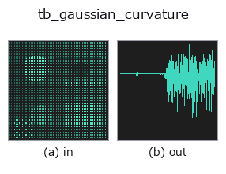

typed op• Datenarten: points → signal
• Aufruf: fullseye.apply(img, "tb_gaussian_curvature", a=0.5, b=0.5) (das 2-D-Modell ist ein Bild plus zwei skalare Regler a,b∈[0,1])

*Die Abbildung ist die tatsächliche Ausgabe auf einer synthetischen 128×128-Eingabe. Links Eingabe, rechts Ausgabe. Punktwolken als Draufsicht-Streudiagramm (Helligkeit = z), 1-D-Reihen als Linie, Volumen als Maximum-Projektion entlang z, Videos als mittleres Bild, komplexe Bilder als Betrag; Rückgabewerte, die kein Bild ergeben, werden als Werte gezeigt.*
Regler a durchfahren (0,1 / 0,5 / 0,9, der andere Regler auf Standard):
▸ tb_gaussian_curvature: Regler a durchfahren (Doku-Website)
*Regler b ändert die Ausgabe nicht (gemessen: identisch bei 0,1 / 0,5 / 0,9).*
Stufen (die vorangehenden Ops → dieser Op, von links nach rechts):
▸ tb_gaussian_curvature: Stufen (Doku-Website)
Auf anderen Bildern (synthetische Szene / Foto / Münzen. Obere Reihe: Eingaben, untere Reihe: deren Ausgaben. Regler auf Standard):
▸ tb_gaussian_curvature: andere Eingaben (Doku-Website)
Gaußsche Krümmung K=k1·k2 (invariant gegenüber einer Umkehrung der Normalen). → (N,).
Ergänzung:
• Gibt mit demselben lokalen Quadrik-Fit wie principal_curvatures k1 * k2 zurück. Das Vorzeichen hängt nicht von der Orientierung der Normalen ab, daher gibt es kein normals-Argument (die Orientierung verwendet immer die Heuristik des Nachbarschaftsschwerpunkts).
• Einheit 1/Länge². Eine Kugel mit Radius R ergibt 1/R², Zylinder und Ebene 0, ein Sattelpunkt einen negativen Wert (k1 und k2 mit entgegengesetztem Vorzeichen).
• k ist die Zahl der Nachbarpunkte (Standard 25, auf N-1 gekürzt). Punkte mit weniger als 5 Nachbarn erhalten 0.
• Dient zur Klassifikation elliptischer Punkte (K>0) / parabolischer Punkte (K=0) / hyperbolischer Punkte (K<0). Konvex und konkav unterscheidet man, indem man normals an mean_curvature oder shape_index übergibt.
• Die Eingabe ist eine (N,3)-Punktwolke. Deterministisch.
Die in die 2-D-Evolutionsregistrierung überbrückte 3d-op gaussian_curvature. Die Implementierung ist dieselbe, nur die Aufrufkonvention ist an op(v, a, b) angepasst. a variiert k (Standard 25). b wird nicht verwendet.
• Katalog der Beispieldaten (Download-URLs / Lizenzen) — 2-D nutzt skimage.data (BSD/Public Domain) plus synthetische Bilder, 3-D nennt Download-URLs echter Datenquellen (Stanford, PDS, …).
• Herkunft und Literatur der Operatoren — die Quellen der Forschung/Verfahren, auf denen diese Operatorfamilie beruht.
Das Programm unten ist nachweislich lauffähig (gleiche Eingabe wie die Abbildung). In der Studio-Hilfe wird dieser Block zu Schaltflächen, die es sofort laden und ausführen.
img_to_points 0.50 0.50 tb_gaussian_curvature 0.50 0.50
▸ Diese Pipeline laden · Laden & ausführen
Die folgenden Beispiele rufen den zugrunde liegenden Ledger-Op gaussian_curvature auf. Dieser Brücken-Op ist dieselbe Implementierung, angepasst an die Konvention fn(v, a, b); das Verhalten gilt unverändert (nur die Aufrufform unterscheidet sich).
• curvature_grasp — py -3.11 examples_3d/curvature_grasp.py
• curvature_shape_index — py -3.11 examples_3d/curvature_shape_index.py
signal als Eingabe)identity · tb_create_funct_1d_array · tb_smooth_funct_1d_gauss · tb_smooth_funct_1d_mean · tb_derivate_funct_1d · tb_integrate_funct_1d · tb_zero_crossings_funct_1d · tb_abs_funct_1d
typed)tb_points_to_voxel · tb_estimate_point_normals · tb_iss_keypoints · tb_project_points · tb_render_point_depth · tb_statistical_outlier_removal · tb_radius_outlier_removal · tb_voxel_grid_downsample
*Provenance: ops.py — 2D Operator-Registry. Diese Notiz wird von tools/opdocs.py md erzeugt (nicht von Hand bearbeiten).*
© 2026 Kazufumi Furuse — Fullseye operator documentation. Licensed under Apache-2.0.